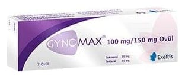

Gynomax 100 mg/150 mg Vajinal Ovül, 7 Adet

Ne için kullanılır
KT · Bölüm 1● GYNOMAX®, vajina içine (hazneye) yerleştirilmek suretiyle uygulanan ovül formunda bir üründür. Antibakteriyel (bakterilere karşı etkili), antifungaller (mantarlara karşı etkili) olarak adlandırılan ilaç grubuna dahildir. ● Beyazımsı sarı renkli pürüzsüz her bir ovül etkin madde olarak 100 mg tiokonazol ve 150 mg tinidazol içermektedir. GYNOMAX®, 7 adet ovül içeren ambalajda kullanıma sunulmaktadır. ● GYNOMAX®, vajinada (haznede) kaşıntı, yanma, anormal akıntı, şişme ve kızarma gibi belirtilerle seyreden vajina iltihabının (vajinit) tedavisinde kullanılır.
- 2 -